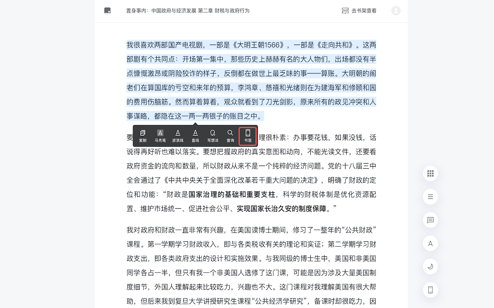
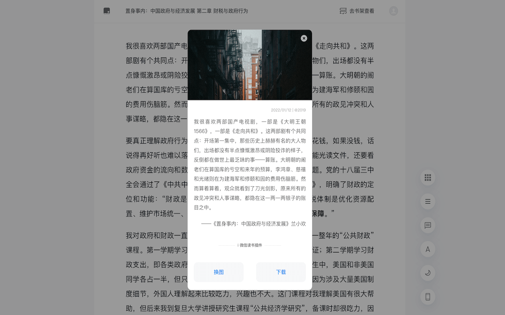
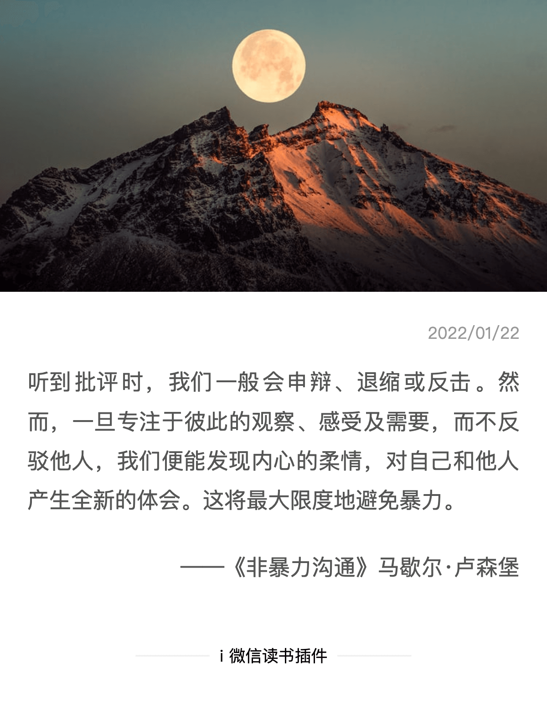
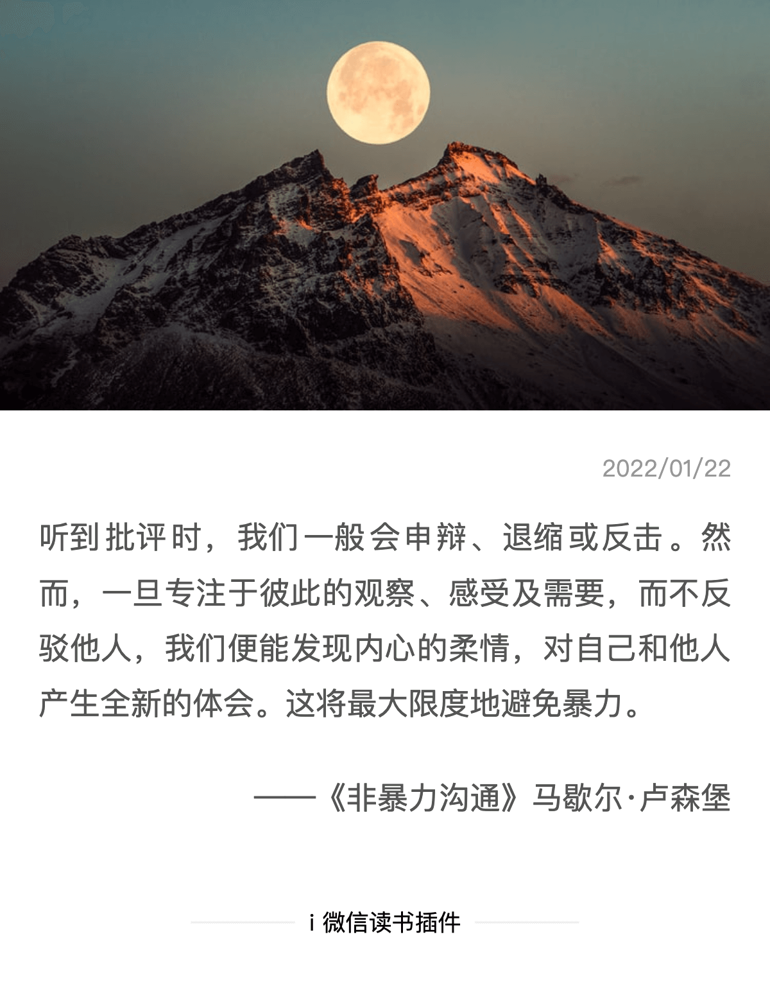
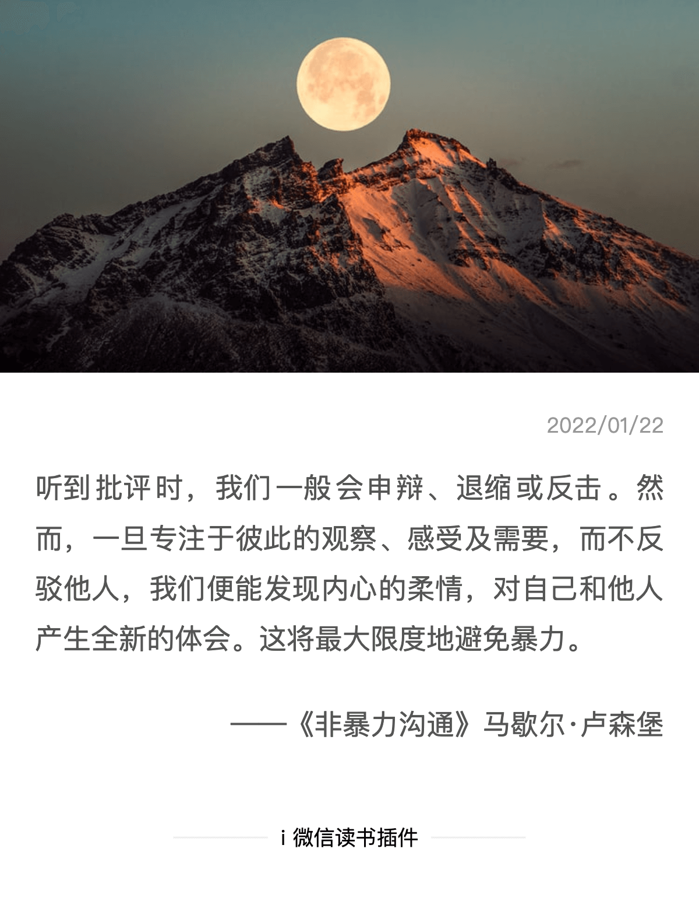

i 微信读书插件
最好用的微信读书插件
支持划线生成图片书签、划线同步笔记到第三方、 一键导出笔记、更换主题、代码块高亮、查看阅读进度等。
应用商店下载
下载安装包


划线生成书签
一键记录阅读的感受与情感，自动配图，点击切换配图，还能编辑和评论，书写自己的灵感。

划线、笔记，自动同步flomo
在我们阅读批注的过程中，可以开启自动同步功能。
所有的划线、笔记，都可以实时同步到flomo。
自动按照笔记的书名进行分类，还能记录批注的时间，方便查找。
一切都是为了更好的阅读和笔记体验。


 
